DaVinci Developer 与 DaVinci Configurator 使用详解——以左/右门开关控制车内顶灯为例
本篇以"驾驶员按下左门或右门开关 → 车内顶灯点亮，松开后熄灭"这一功能为例，手把手走完 DaVinci 工具链的每一站操作：在哪个工具里点哪个菜单、每个界面里填什么、填完之后如何跳转到下一个界面。主要参考 CSDN 雪云飞星《AutoSAR系列讲解（实践篇）7.4-实验：配置SWC&RTE（上）》与《7.7-实验：配置SWC&RTE（下）》两篇文章的实验流程，并以 Vector《DaVinci Configurator Pro Step-by-Step》官方手册（STEP1~STEP9）为辅助对照。工具界面示意图依参考文章文字描述绘制。
- 一、工具定位与案例总览——两个工具各管什么，案例长什么样
- 二、第①站：Configurator 新建工程——File→New 四页向导
- 三、第②站：跳转到 Developer 打开工程——Open Workspace 打开 .dcf 工作区
- 四、第③④站：Developer 建模——类型定义、添加Port、Composition连线
- 五、第⑤站：数据映射与 Runnable——IDT/Data Mapping/触发与端口访问
- 六、第⑥⑦站：同步工程与导入DBC——回到 Configurator
- 七、第⑧站：Task 映射与 OS 配置——创建Task、映射、Position
- 八、第⑨⑩站：代码生成与应用实现——Generate、填代码、编译烧录
- 九、全流程回顾与常见问题——界面跳转地图、口诀、排错表
一、工具定位与案例总览
1.1 两个工具的分工与协作
Vector 的 DaVinci 工具链由两把工具组成，很多新手第一次打开就蒙：它们长得像，工程还能互相打开，到底谁干谁的活？一句话记住：DaVinci Developer 画"设计图"（系统级），DaVinci Configurator Pro（下文简称 Cfg）做"施工图"（ECU 级）。
| 工具 | 职责范围 | 操作对象 | 典型动作 |
|---|---|---|---|
| DaVinci Developer | 系统级设计：数据类型、端口接口、SWC 组件、组件连线、Runnable 与数据映射 | SWC 模型（arxml） | 创建类型、加端口、拉连线、配 Runnable |
| DaVinci Configurator Pro | ECU 级配置：BSW 模块、OS/Task、通信栈（Com/PduR/CanIf）、代码生成 | ECU 配置（ECUC） | 新建工程、导入DBC、创建Task、Generate |
两个工具之所以能配合，靠的是两样东西：（1）.dpa 总工程——Cfg 新建工程时生成，同时在 Config\Developer\ 下生成 Developer 专用的 .dcf 工作区（Developer 用 File→Open Workspace 打开的就是它）；（2）arxml 文件——Developer 侧改动保存后，Cfg 靠同步机制（Synchronize）把 arxml 的变化吸收进配置工程。理解了这一点，后面所有"界面跳转"就都顺理成章了。
1.2 案例功能与本篇路线
案例需求：左门开关或右门开关按下时车内顶灯点亮；两个开关都断开时顶灯熄灭。功能拆成 4 个 SWC：左门开关SWC（CpSaDoorFrontLeft）、右门开关SWC（CpSaDoorFrontRight）各自发送门状态（DeDoorState，BOOLEAN）；车门灯逻辑SWC（CpApMySwc）读两个门状态、做"或"运算后发送灯状态（DeLightState）；顶灯执行SWC（CpSaInteriorLight）接收灯状态并驱动顶灯。
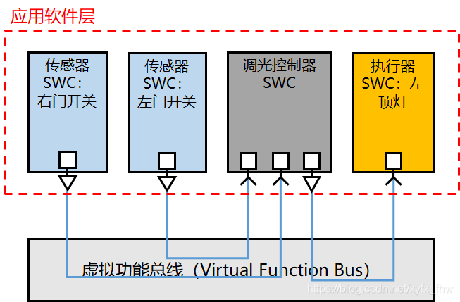
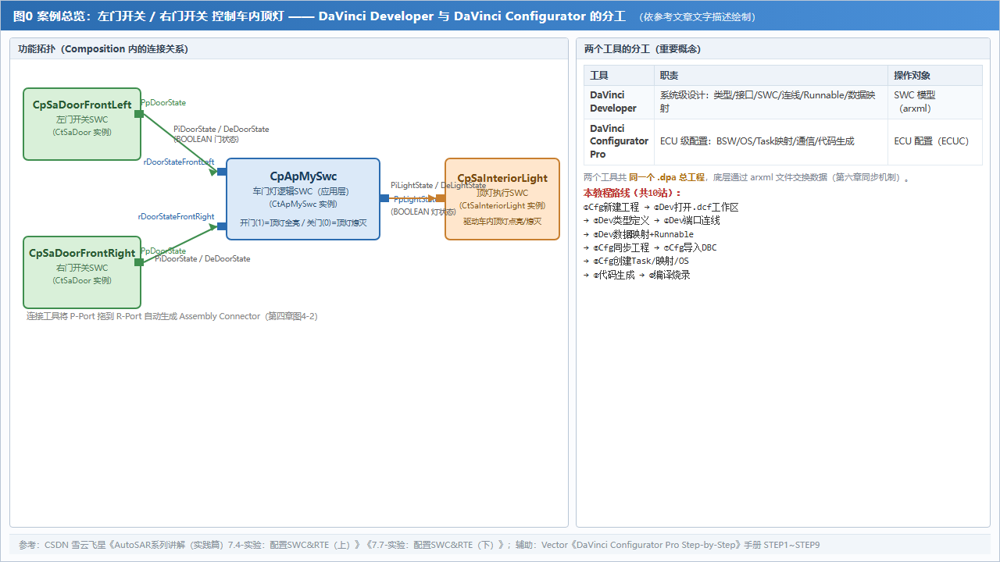
本篇把全流程拆成 10 站（图1-2右侧红字）：第①②站完成两个工具之间的第一次握手；第③④⑤站在 Developer 里建模；第⑥⑦⑧站回到 Configurator 同步、导入DBC、配置OS；第⑨⑩站生成代码、填写应用逻辑并编译验证。每一章末尾都有"界面跳转"提示框，告诉你当前界面完成后如何进入下一站。
Developer 管系统级建模（类型/端口/SWC/连线/Runnable），Configurator 管 ECU 级配置（BSW/OS/通信/代码生成）；两工具共用一个 .dpa 总工程，靠 arxml 同步数据。案例为左/右门开关经逻辑SWC控制顶灯，共 4 个 SWC、2 类信号（门状态、灯状态）。
案例确认无误后，启动 DaVinci Configurator Pro，进入第二章"File→New"新建工程向导（第①站）。
二、第①站：Configurator 新建工程
2.1 工程向导四页走
一切从 Cfg 开始——先用它建工程，再用 Developer 在工程里建模。启动 DaVinci Configurator Pro 后，点击菜单 File → New...，弹出多步式新建工程向导（本实验版本共四页）：
- 1Step 1（General Settings）：填写 SIP Location（MICROSAR 软件包安装位置，与购买序列号相关，原文截图打码）、Project Name（本例 Demo1）、Project Folder（本例 C:\AutoSAR_Demo），Author / Version / Description 按需填写；
- 2点击 Next > 进入 Step 2（Project Folder Structure），确认代码与模板的存放路径（Module Files=.\Appl\GenData、Templates=.\Appl\Source、Log=.\Log，见图2-4），保持默认继续；
- 3Step 3（Target）页选择芯片与编译器（见 2.2 节）；
- 4Step 4（DaVinci Developer）页无需修改，直接点 Finish 生成工程。
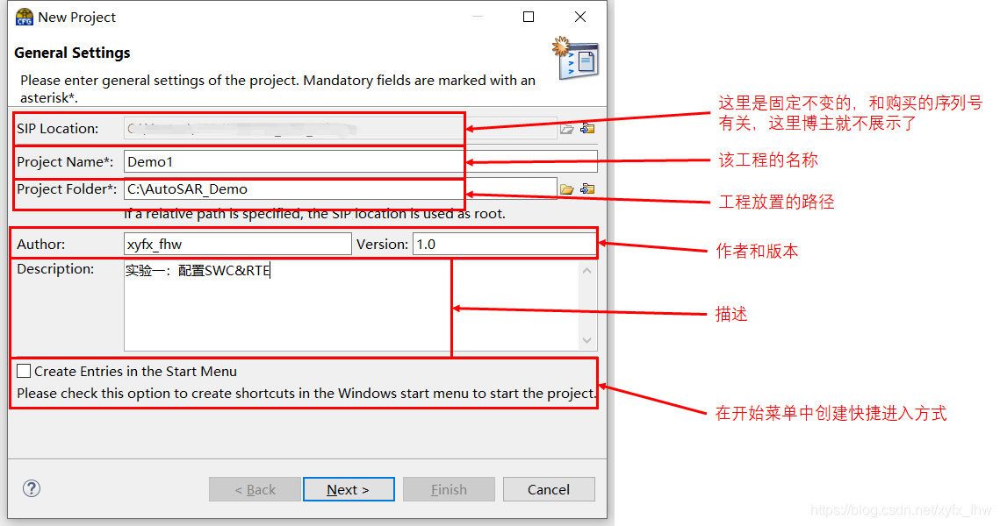
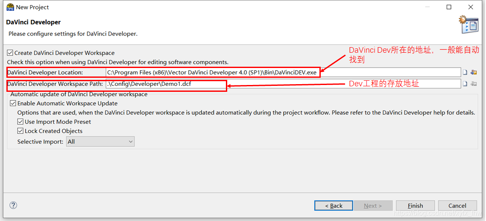
2.2 Target 选择与目录结构
Step 3（Target）页从下拉框选择 Derivative（芯片型号，决定 MCAL 与外设资源）和 Compiler（编译器，影响生成代码风格），Pin Layout 按硬件原理图选择或保持默认。点击 Finish 后工具生成工程并自动打开，按 Ctrl+S 保存，记下工程路径——下一站 Developer 打开的就是工程内 Config\Developer\ 下自动生成的 .dcf 工作区。生成的目录结构：
| 目录/文件 | 作用 |
|---|---|
| Appl\ | 应用层：SWC 代码模板与手写代码（第八章填代码处） |
| Config\ | 配置数据：System\（系统描述 Demo1.arxml）、ApplicationComponents\（SWC模型）、ECUC\（BSW配置）、Developer\、InternalBehavior\ 等 |
| Demo1.dpa | Cfg 总工程文件；Config\Developer\ 下的 Demo1.dcf 为 Developer 的工作区，指向同一工程——两把工具的"握手点" |
| Log\ | 工具日志，报错时来这里查原因 |
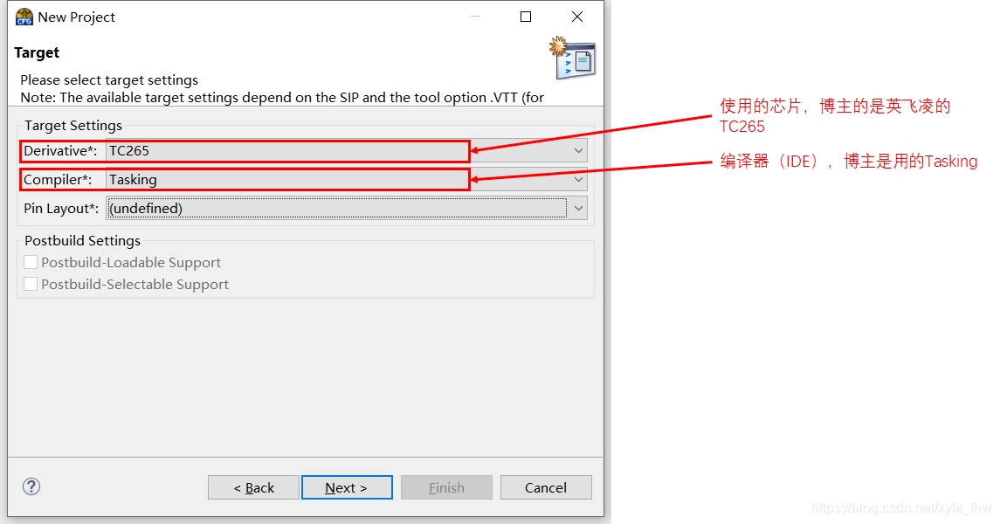
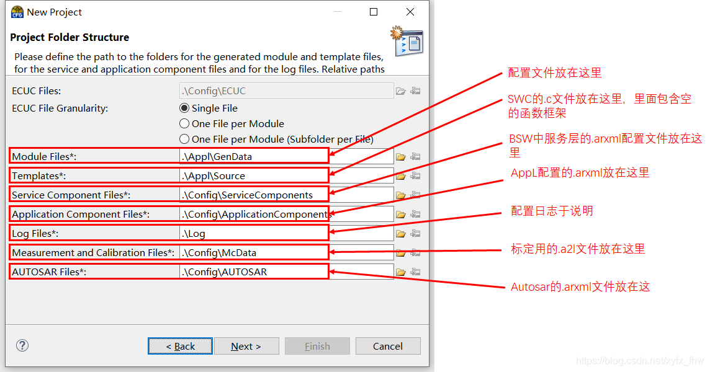
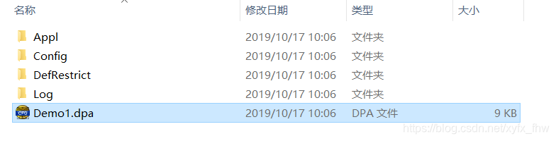
第①站在 Cfg 中完成：File→New 打开四页向导 → General Settings 填 SIP/工程名/路径（禁中文空格）→ Project Folder Structure 确认存放路径 → Target 选芯片与编译器 → Finish 生成工程 → Ctrl+S 保存。工程目录中 Appl\ 放应用代码、Config\ 放配置数据、Log\ 放日志，Demo1.dpa 是 Cfg 总工程（其下 Config\Developer\ 的 Demo1.dcf 为 Dev 工作区）。
Cfg 工程已建好并保存。启动 DaVinci Developer，用 File → Open Workspace... 打开工程内 Config\Developer\ 下的 Demo1.dcf 工作区（详见第三章），完成 Cfg → Dev 的第一次跳转。
三、第②站：跳转到 Developer 打开工程
3.1 Open Workspace 打开 .dcf 工作区
Developer 的入口是"打开工作区"。有两种方法从 Cfg 跳转过来：
- 1方法A（标准）：启动 DaVinci Developer → 菜单 File → Open Workspace... → 进入工程目录 Config\Developer\ → 选中 Demo1.dcf 工作区 → 点击"打开"；
- 2方法B（快捷）：直接在 Cfg 主界面左上角的 Start Menu 中点击 Configure SWCs，Cfg 会自动拉起 Developer 并打开当前工程（官方手册 STEP5 推荐的切换方式）；
- 3打开成功的标志：左侧 Object Browser 出现工程树（Application Component Types、Data Types、Port Interfaces、Type Mapping Sets 等节点），底部 Action Log 提示 opened workspace successfully。
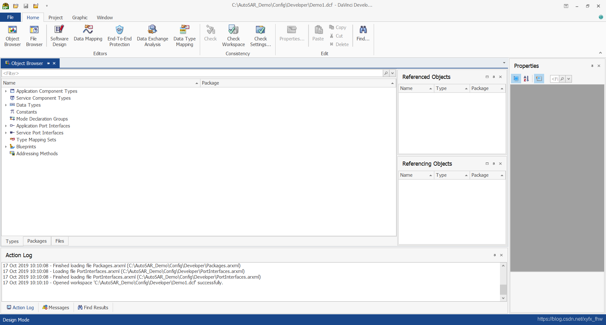
第②站完成 Cfg → Dev 的界面跳转：方法A为 Dev 中 File→Open Workspace 手动选 .dcf 工作区；方法B为 Cfg 的 Start Menu 中点 Configure SWCs 一键跳转。打开成功的标志是 Object Browser 出现工程树、Action Log 提示打开成功。
当前在 Developer 的主界面。下面在左侧 Object Browser 中开始创建类型定义——见第四章。
四、第③④站：Developer 建模（类型、端口、连线）
4.1 创建类型定义（Object Browser）
建模第一步是"备料"——创建三类对象：SWC Types（组件类型）、ADT（应用数据类型）、Port Interfaces（端口接口）。全部在左侧 Object Browser（Types 视图）中右键创建，注意观察命名规则（前缀 Ct/Adt/Pi/De 是团队约定的语义标记）：
| 类别 | 创建对象 | 关键属性 |
|---|---|---|
| SWC Types（右键 SWC Types → Create ... Component Type） | CtCoApplication | Type: Composition（组合组件，画布容器） |
| CtApMySwc | Type: Application；Support Multiple Instantiation: off（不可重用） | |
| CtSaDoor | Type: SensorActuator；Multiple Instantiation: on（可多实例，左右门共用一个类型） | |
| CtSaInteriorLight | Type: SensorActuator；Multiple Instantiation: on | |
| ADT（右键 Data Types → 创建 Application Data Type） | AdtDoorState | Base Type: BOOLEAN（门状态） |
| AdtLightState | Base Type: BOOLEAN（灯状态） | |
| Port Interfaces（右键 Port Interfaces → Create Sender/Receiver Interface） | PiDoorState | 数据元素 DeDoorState，类型关联 AdtDoorState（创建接口的同时关联 ADT） |
| PiLightState | 数据元素 DeLightState，类型关联 AdtLightState |
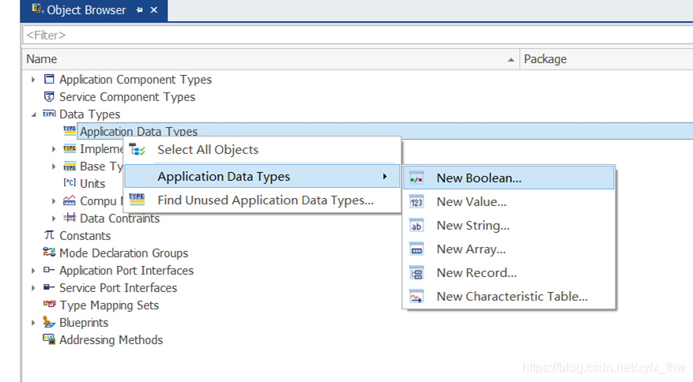
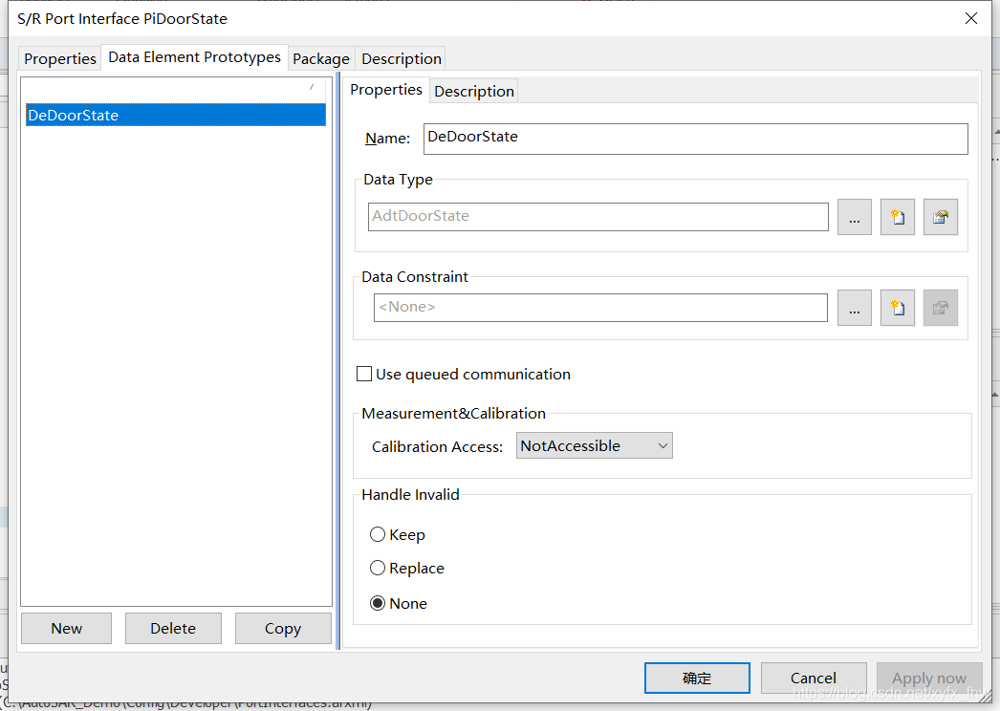
4.2 添加 Port 与属性（Interface Graphic）
备料完成后给组件"装接口"。以核心组件 CtApMySwc 为例：
- 1双击 CtApMySwc 进入其编辑界面，点击左下角 Interface Graphic 图标（或导航栏 Graphic 选项卡）切换到图形化端口编辑视图；
- 2添加 3 个端口：2 个 Receiver 端口绑定 PiDoorState、1 个 Sender 端口绑定 PiLightState（图中以添加 Sender 为例，其他同理）；
- 3先添加常量定义：CDoorClosed = 0、CLightOff = 0（为常量取个名字而已）；
- 4双击端口修改属性：端口改名 PpDoorStateFrontLeft / PpDoorStateFrontRight / PpLightStateFront，Init Value 分别选 CDoorClosed、CDoorClosed、CLightOff。
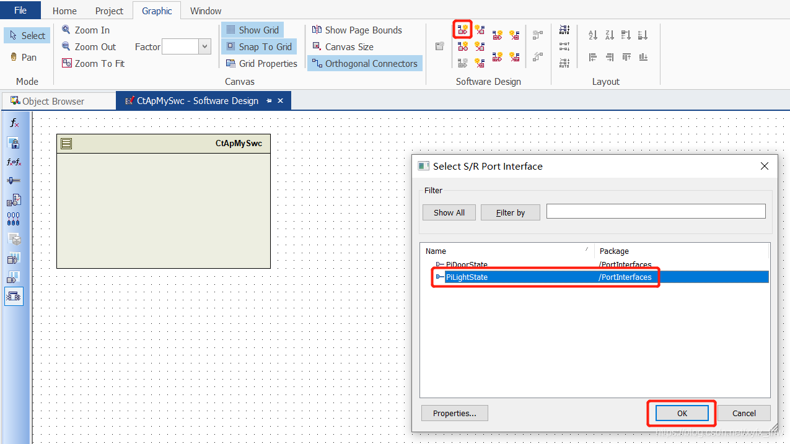
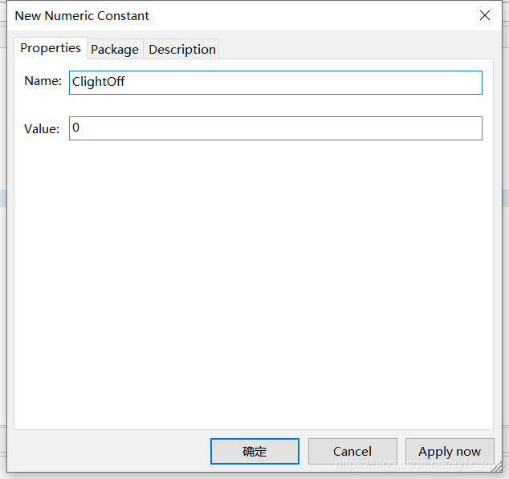
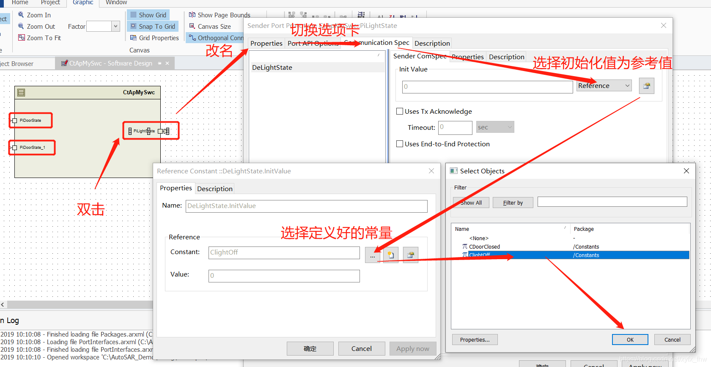
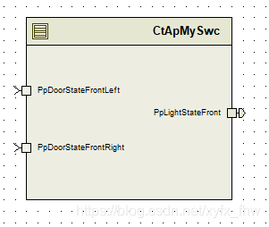
随后按同样方法为另外两个 Atomic SWC 建好端口：CtSaDoor 加 1 个 Sender 端口 PpDoorState（绑 PiDoorState，Init Value = CDoorClosed）；CtSaInteriorLight 加 1 个 Receiver 端口 PpLightState（绑 PiLightState，Init Value = CLightOff）。
4.3 Composition 连线（把 SWC 连成系统）
- 5双击 CtCoApplication 进入 Composition 编辑画布；
- 6把 3 个 Atomic SWC（CtApMySwc、CtSaDoor、CtSaInteriorLight）从 Object Browser 拖入画布；
- 7修改实例化后的名字（注意格式是"实例名::类型名"，表示实例继承自类型）：CpApMySwc、CpSaDoorFrontLeft、CpSaDoorFrontRight、CpSaInteriorLight——其中左、右门两个实例都来自 CtSaDoor 类型（多实例化的意义就在此）；
- 8点击连接工具，从发送方 P-Port 拖拽到接收方 R-Port，自动生成 Assembly Connector，共 3 条连线：左门→逻辑、右门→逻辑、逻辑→顶灯。
- 9最后双击 ECU_Composition（它就代表我们的 ECU 本体），把 CtCoApplication 拖入其画布生成组件实例，右键 Properties 将实例名改为 CpCoApplication——Dev 侧建模闭环。
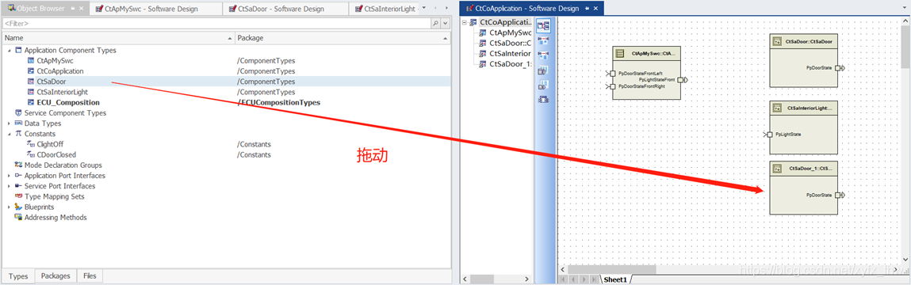
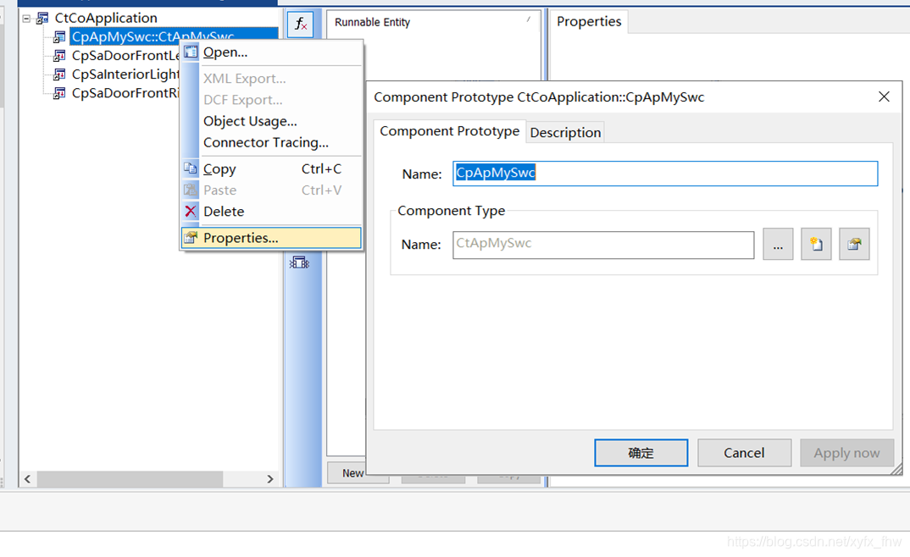
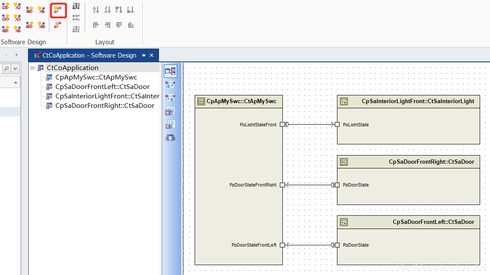
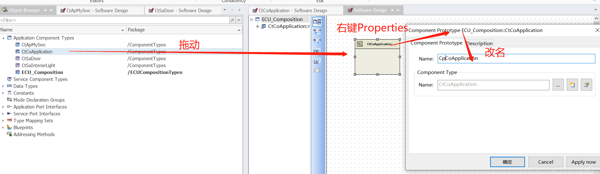
第③④站在 Developer 中完成"备料—装接口—连线"：Object Browser 右键创建 4 个 SWC Type（注意 Application 与 SensorActuator 的多实例化设置差异）、2 个 ADT、2 个 S/R 接口（同时关联 ADT）；Interface Graphic 视图加端口并设置 Init Value（引用常量 CDoorClosed/CLightOff）；Composition 画布拖入实例、改名（Cp 前缀实例继承 Ct 类型）、连线工具生成 3 条 Assembly Connector；最后把 CtCoApplication 实例化进 ECU_Composition（CpCoApplication）。
连线完成后回到 Object Browser 界面，继续创建 IDT 与数据映射——仍在 Developer 中（第五章，第⑤站）。
五、第⑤站：数据映射与 Runnable 配置
5.1 创建 IDT 与 Data Mapping Set
前面建的 ADT 是"面向功能"的类型，代码生成还需要"面向实现"的 IDT（Implementation Data Type），两者靠映射表（Data Mapping）对应起来：
- 1创建两个 IDT：IdtDoorState、IdtLightState，Data Type 均为 BOOLEAN，Compu Method 均为 boolean_CompuMethod（默认的查表方法把 1/0 定义为 TRUE/FALSE；想更可读可自定义计算方法，比如把 1 定义为 DoorOpen、0 定义为 DoorClosed）；
- 2在 Mappings 节点右键 → Create Data Mapping Set，取名 DemoTypeMapping；
- 3在 Data Type Maps 中建立一一对应：AdtDoorState → IdtDoorState、AdtLightState → IdtLightState；
- 4应用映射：在 3 个 Atomic SWC（CtApMySwc、CtSaDoor、CtSaInteriorLight）上右键 → Properties，切换到 Mapping Sets 选项卡，添加 DemoTypeMapping；
- 5点击检查按钮，确认所有端口的数据元素都映射成功——未映射会报错误提示（如 40317 Missing data type mapping，见图5-4）。
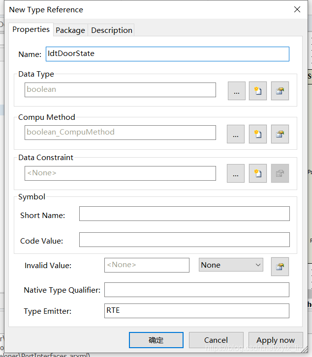
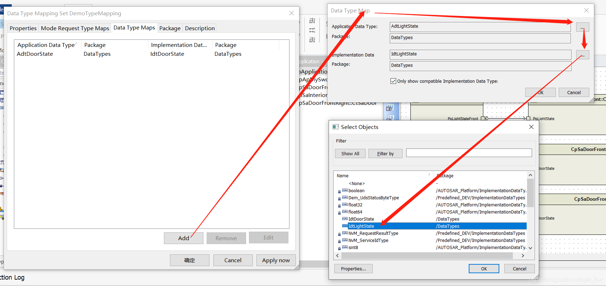
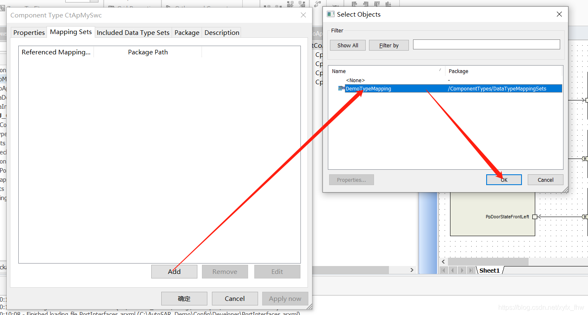
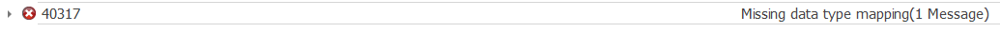
5.2 Runnable 三要素：Name / Trigger / Port Access
SWC 只是"躯壳"，Runnable（运行实体）才是真正干活的函数。双击 SWC → Internal Behavior → Runnables 添加，每个 Runnable 要配三样东西：
| 所属SWC | Runnable 名（=函数名） | Trigger 触发条件 | Port Access 端口访问 |
|---|---|---|---|
| CpApMySwc | RCtApMySwcCode | 收到 PpDoorStateFrontLeft 和 PpDoorStateFrontRight 的数据时触发（Data reception received event） | 读 PpDoorStateFrontLeft、PpDoorStateFrontRight；写 PpLightStateFront |
| CpSaDoorFrontLeft / Right | RCtSaDoorReadDoor | 200ms 周期触发（Periodic） | 写 PpDoorState |
| CpSaInteriorLight | RCtSaInteriorLightSwitchLight | 收到 PpLightState 数据时触发 | 读 PpLightState（驱动顶灯） |
操作要领：在 Properties 的 Name 里编辑 Runnable 名字——这个名字就是最终生成的 C 函数名；切到 Trigger 选项卡配置触发条件；在 Port Access 中通过 New 添加本 Runnable 要读/写的端口访问。注意：Runnable 生成代码只是函数框架，函数体内容需要我们自己填（见 8.2 节）。
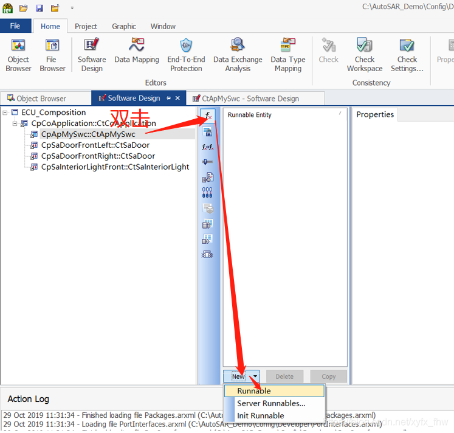
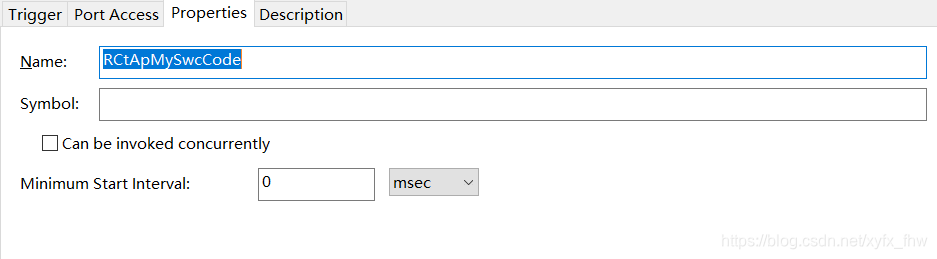
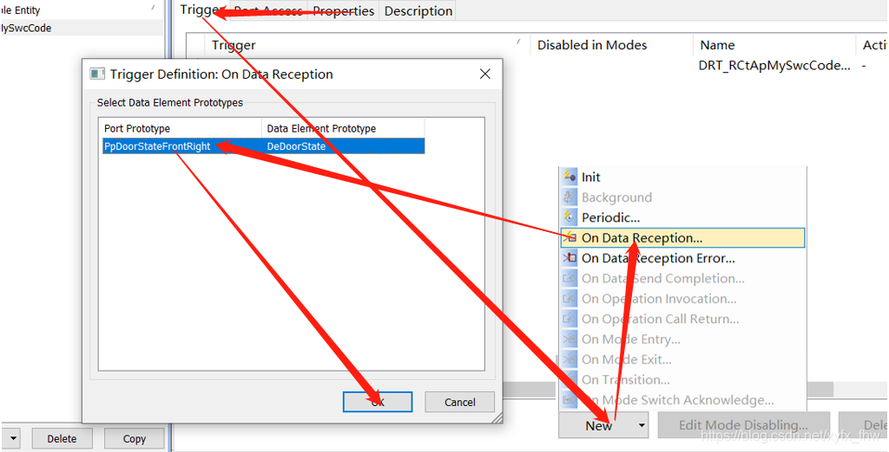
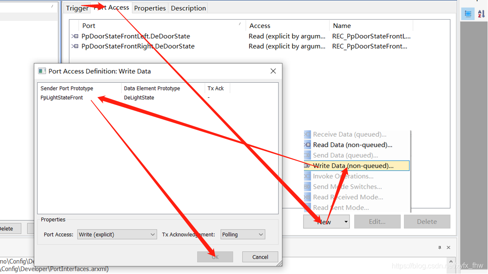
第⑤站两件事：其一，创建 IDT 并通过 Data Mapping Set（DemoTypeMapping）把 ADT 映射到 IDT，在 SWC Properties→Mapping Sets 中应用并检查；其二，为每个 SWC 配 Runnable，三要素为 Name（=生成的函数名）、Trigger（数据接收触发或 200ms 周期触发）、Port Access（读/写哪些端口）。
Dev 中保存工程后，启动/切换回 DaVinci Configurator，File→Open 打开 Demo1.dpa，弹出同步提示框——进入第六章（第⑥站）。
六、第⑥⑦站：回到 Configurator（同步与DBC）
6.1 同步 Dev 与 Cfg 工程
- 1确认 Dev 中已检查并保存工程（一定要保存）；
- 2打开 Cfg，File → Open → Demo1.dpa；
- 3弹出"DCF workspace or external software component change detected"提示框时，点击 Synchronize configuration now...；
- 4同步完成后，System 下出现 CtCoApplication 及 4 个 SWC 实例——Dev 侧的模型正式进入 Cfg。
同步的本质：两工具通过 arxml 文件（Demo1.arxml）交换数据——对话框里显示的就是该文件与工程内版本不一致、要求同步。此后每次在 Dev 改模型，回到 Cfg 都会再次提示同步，这是两工具协作的固定节奏。
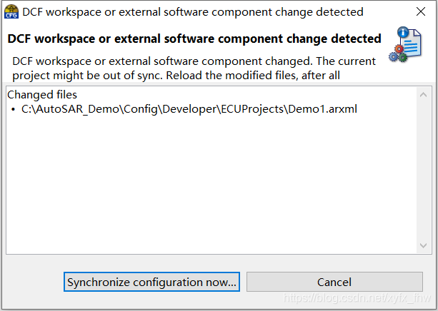
6.2 导入 DBC 通信矩阵
同步后会发现界面里"啥也没有"——这是正常的，因为还没有 DBC 或其他通信矩阵文件（如 arxml 类型，选界面中对应的按钮即可）。以最常用的 DBC 为例：
- 1在 Input Files 视图选择入口：arxml 系统描述选 System Description Files 右侧图标（原文红字提示"如果是arxml文件选这里"），在弹出的 Legacy Files → File selection 对话框中添加自己的 DBC 文件（本例 CAN.dbc）；
- 2点击 Next > 完成向导，列表显示 CAN.dbc [MyECU]，即关联到本 ECU；
- 3点击 Update the configuration now to commit the project modifications. 链接；
- 4在 Update Project 对话框按 Workflow 执行更新（校验→预处理→备份→准备更新数据，耗时较长），完成后 DBC 真正进入配置工程。
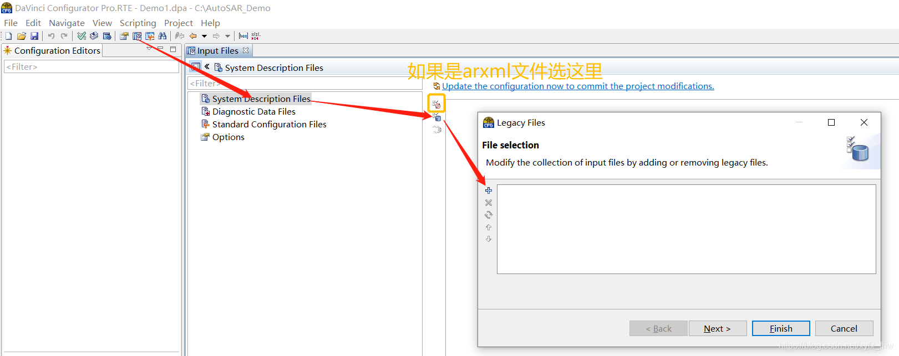
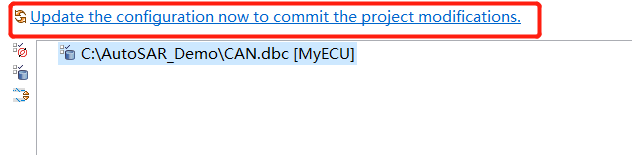
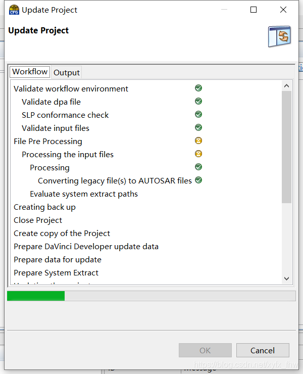
第⑥站：Dev 保存 → Cfg 打开同一 .dpa → 在"DCF workspace or external software component change detected"提示框点 Synchronize configuration now...（本质是 arxml 差异同步）。第⑦站：Input Files 中添加 DBC（列表显示 CAN.dbc [MyECU]）后点 Update the configuration now... 更新进工程（Update Project 按 Workflow 执行，耗时较长），Cfg 自动生成通信模块配置。同步前"界面空空"是正常现象。
通信骨架就绪后，进入 Os Configuration 视图创建 Task——见第七章（第⑧站）。
七、第⑧站：Task 映射与 OS 配置
7.1 创建 Task
Runnable 需要在 Task 上运行，先创建两个 Task（Os Configuration 中新建）：
| 参数 | My_Task | IO_Task | 含义 |
|---|---|---|---|
| Schedule Type | Non-preemptive | Non-preemptive | 是否可以被抢占 |
| Priority | 2 | 3 | 优先级（数值越大越高） |
| Activation | 2 | 1 | 任务的最大队列激活请求数 |
| Task Type | Basic | Extended | 基础任务 / 扩展任务 |
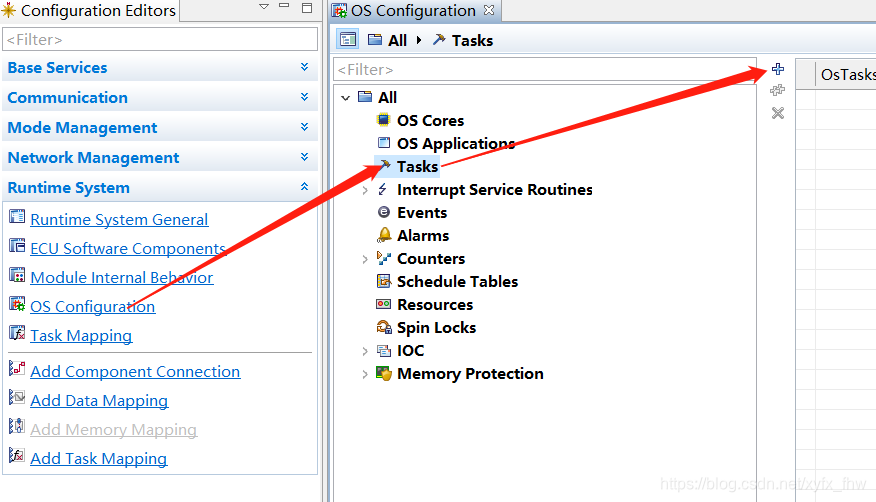
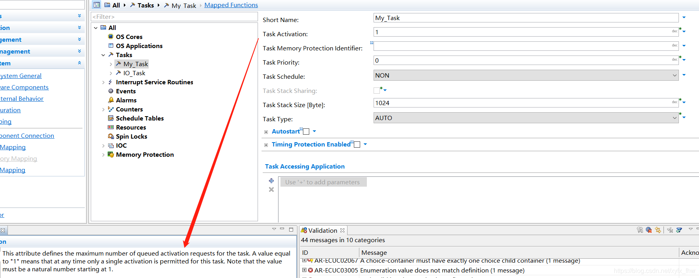
7.2 Runnable 映射到 Task 与 Position
映射方法很简单：在 Runnable 的 Task 选项卡中选择需要映射的 Task 即可。需要以下配置：
| Runnable | 映射 Task | Position |
|---|---|---|
| RCtApMySwcCode | My_Task | 0 |
| RCtSaInteriorLightSwitchLight | IO_Task | 2 |
| RCtSaDoorReadDoor（Left & Right 两个实例） | IO_Task | 0 / 1 |
Position 可以理解为同一 Task 内的执行顺序（My_Task 和 IO_Task 都要配）——同一任务里谁先跑谁后跑由它决定。
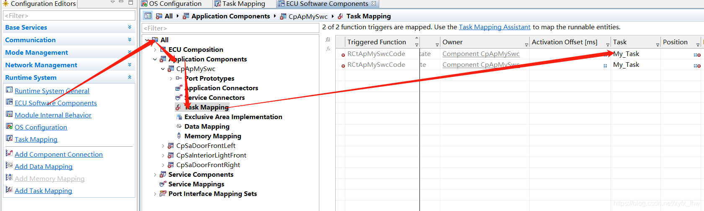
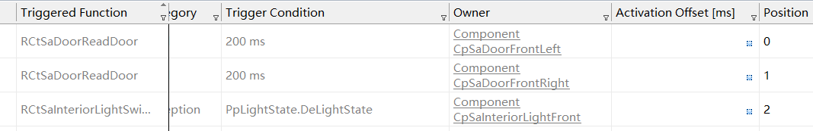
7.3 OS 自动生成的内容
到这里 OS 的 Task 已配好，剩下 Os Configuration 里的内容可对照 OS 理论章节自行检查。需要说明：System Timer（系统计数器）是系统自动创建的——因为我们在配置 Runnable 时选择了 200ms 周期触发，系统就会自己生成一个 Counter（并自动关联 Alarm），无需手动配置。DaVinci 会像这样帮我们自动配置很多东西。
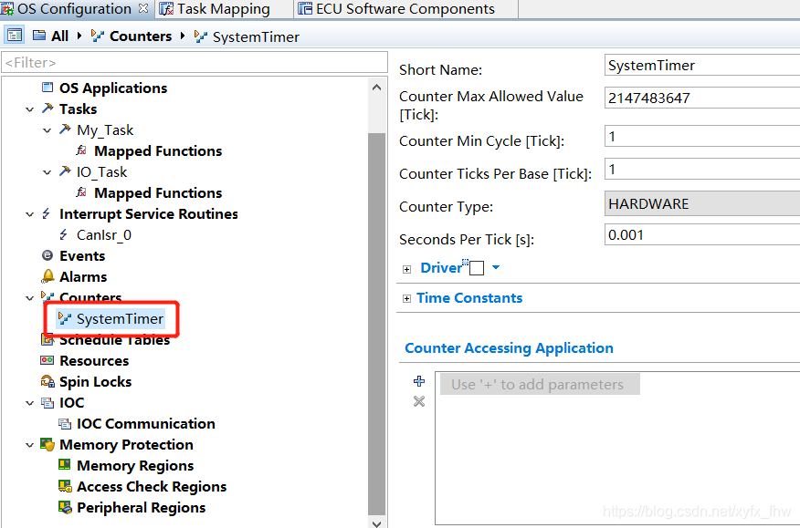
第⑧站：Os Configuration 中创建两个非抢占 Task（My_Task 优先级2/Basic、IO_Task 优先级3/Extended）；在 Runnable 的 Task 选项卡完成映射（逻辑SWC→My_Task，其余→IO_Task）；Position 定义同一 Task 内执行顺序；200ms 周期触发使 OS 自动生成 Counter/Alarm，无需手动建。
OS 配置完毕，回到 Cfg 主界面点击工具栏 Generate 按钮启动代码生成——见第八章（第⑨站）。
八、第⑨⑩站：代码生成与应用实现
8.1 启动代码生成
- 1在 Cfg 工具栏点击 Generate 按钮，弹出 Generation dialog（生成对话框）；
- 2开始生成：RTE 代码（Rte.c/Rte.h，把 Developer 里画的连线变成真正的函数调用）与 BSW 配置代码一起产出；
- 3生成完成后，*.c/*.h 存放在 <ProjectFolder>\Appl\GenData\ 目录下。
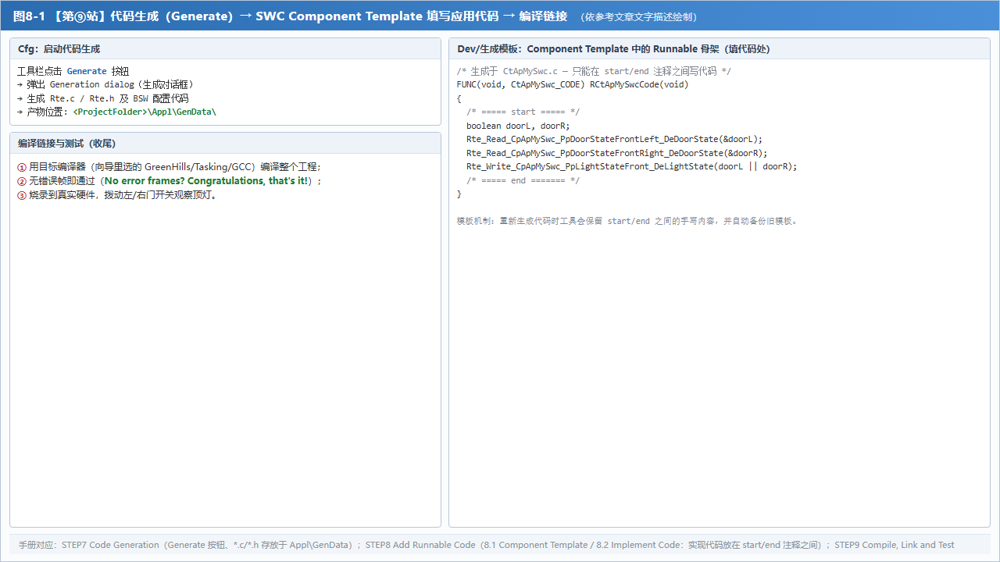
8.2 填写 Component Template（应用代码）
生成的 SWC 模板里，每个 Runnable 只是一个空壳函数，逻辑写在 start/end 注释之间。车门灯逻辑 SWC 的核心代码只有三行：
注意函数名：RTE 生成的 API 把"组件实例名_端口名_数据元素名"拼进了调用名——这正是 4.1 节强调命名规范的原因。门开关 SWC 的 RCtSaDoorReadDoor 中写 doorL = 开关GPIO电平（消抖后），顶灯 SWC 的 RCtSaInteriorLightSwitchLight 中按 lightState 驱动顶灯输出。
8.3 编译烧录与验证
- 1用向导里选择的编译器（GreenHills/Tasking/GCC）编译整个工程；
- 2官方手册的收尾寄语是——"No error frames? Congratulations, that's it!"（没有错误帧？恭喜，大功告成）；
- 3烧录到真实硬件：按下左门或右门开关 → 顶灯点亮；两个开关都断开 → 顶灯熄灭。
第⑨站：Cfg 工具栏 Generate 生成 RTE 与 BSW 代码到 Appl\GenData\。第⑩站：在生成的 Component Template 的 start/end 注释之间填写应用逻辑（读两个门状态→或运算→写灯状态），编译链接烧录后即可实车验证。至此"建模→配置→映射→生成→实现→验证"全流程闭环。
功能验证通过后，建议回到第九章对照"全流程跳转地图"复盘一遍操作路径，并浏览常见问题表，为下次独立建工程做准备。
九、全流程回顾与常见问题
9.1 界面跳转地图与口诀
把前面八章的"从哪个界面跳到哪个界面"浓缩成一张地图（蓝色=Configurator，绿色=Developer），并在底部给出与参考文章三大步骤的对应口诀：
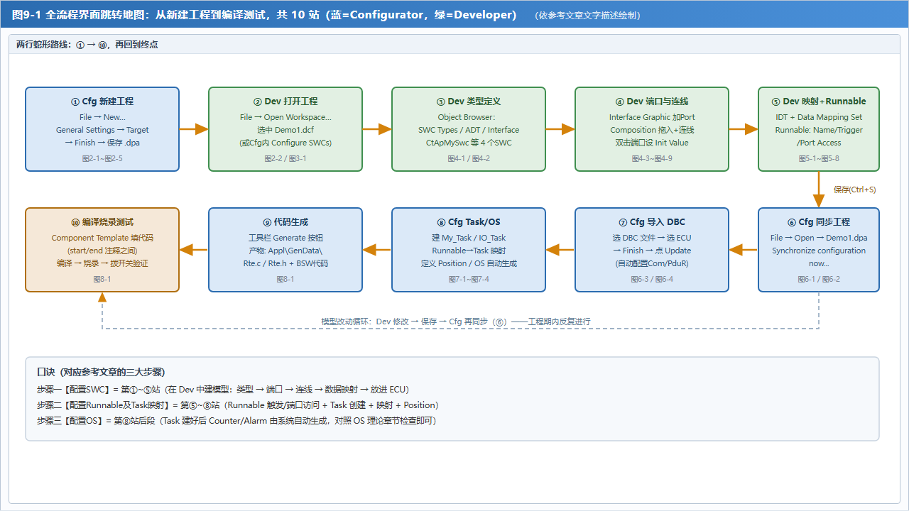
| 跳转场景 | 操作方法 |
|---|---|
| Cfg → Dev | Dev 中 File→Open Workspace 选工程内 .dcf 工作区；或在 Cfg 的 Start Menu 点 Configure SWCs 一键跳转 |
| Dev → Cfg | Dev 中 Ctrl+S 保存后，Cfg 中 File→Open 打开同一 .dpa，点 Synchronize configuration now... |
| 模型再次修改（工程期循环） | Dev 改模型 → 保存 → 回 Cfg 再次同步——开发期内反复进行 |
| 建模界面内部切换 | Object Browser（类型树）↔ 双击组件进入编辑器 ↔ Graphic 选项卡（图形化端口）↔ Composition 画布 |
9.2 常见问题排查
| 问题现象 | 可能原因 | 排查与解决 |
|---|---|---|
| Cfg 打开工程后"啥也没有" | 未导入 DBC 等通信矩阵文件 | 属正常现象；按 6.2 节导入 DBC 并点 Update 更新进工程 |
| Cfg 中同步不到 Dev 的模型 | Dev 侧忘记保存 | 回 Dev 检查并 Ctrl+S 保存，再执行 Synchronize configuration now... |
| Data Mapping 检查报黄色警告 | 某 ADT 未在 Data Type Maps 中对应 IDT | 打开 DemoTypeMapping 补全 ADT→IDT 映射后重新检查 |
| 连线拉不出来 | 两端接口或数据元素类型不一致 | 核对两端绑定的是同一接口（如都是 PiDoorState）且数据元素类型相同 |
| 导入 DBC 后报一堆问题 | DBC 与模型端口不匹配 | 前期实验先不解决，留到综合实验统一处理（参考原文建议） |
| 重新生成代码后手写逻辑丢失 | 代码写在 start/end 注释之外 | 应用代码必须写在 Component Template 的 start/end 注释之间，工具会保留该区间 |
| OS 里找不到计数器/警报 | 以为要手动建 | 200ms 周期触发会让系统自动生成 Counter 并关联 Alarm，检查即可无需新建 |
第九章收束全篇：用"全流程跳转地图"复盘 10 站路线与四处典型跳转（Cfg↔Dev、建模界面内部切换、工程期同步循环）；常见问题表覆盖 7 类高频故障，其中"Dev 忘保存导致同步不到""代码写在 start/end 注释之外"两类最易踩中，建议操作时对照排查表逐项预防。至此，左/右门开关控制顶灯案例已按"第①站~第⑩站"全部走通。
9.3 参考来源
主要参考：CSDN 雪云飞星（xyfx_fhw）《AutoSAR系列讲解（实践篇）7.4-实验：配置SWC&RTE（上）》（blog.csdn.net/xyfx_fhw/article/details/102543399）、《AutoSAR系列讲解（实践篇）7.7-实验：配置SWC&RTE（下）》（blog.csdn.net/xyfx_fhw/article/details/102600431）。辅助参考：Vector《DaVinci Configurator Pro Step-by-Step》官方手册（STEP1~STEP9 及 SWC Design/Mappings 概念章节）。图1-2、图8-1、图9-1 为依上述参考文章文字描述绘制的示意图，其余界面配图均为上述博文的真实操作截图；命名（CtApMySwc、CpSaDoorFrontLeft/Right、CpSaInteriorLight、PiDoorState/PiLightState、IdtDoorState/IdtLightState、DemoTypeMapping、RCtApMySwcCode 等）与配置参数（My_Task/IO_Task、200ms 周期等）忠实于参考文章实验设置。